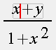
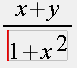
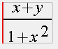
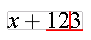
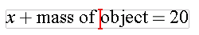

When you start a new equation, the cursor automatically starts as a vertical line in an empty template. As you type, the cursor will move, indicating the current insertion point. Also, a faint gray box will appear, outlining the template in which the cursor is currently located. As you move around in an equation, the gray outline shifts, giving you a visual cue about the nesting structure of the underlying MathML, as illustrated below.
|  |  |  |
When you use the arrow keys, the editor tries to move through layers of MathML nesting and jump ahead to the next reasonable place to begin inserting characters again. The up and down arrows keys generally move the cursor vertically, and the left and right arrows move the cursor horizontally between children in a given template. However, because the cursor has to move within the MathML structure, arrow keys sometimes give unexpected results. If you find yourself having a hard time getting the cursor where you want it with the arrow keys, you may find it easier to use the mouse.
The WebEQ Editor cursor doesn't blink to show its active. Instead, when WebEQ Editor looses the keyboard 'focus' the cursor turns black to indicate it isn't active.
The editor will automatically put characters into special MathML templates called tokens. There are tokens for variables (called an <mi> box in MathML), numbers (<mn>), operators (<mo>), and so on.
The right and left arrow keys generally move the cursor between the tokens in the row. When you move the cursor over a token that groups several characters together, it will take an upside down T-shape to show the extent of the grouped items by underlining them, as shown here:

You can also position the cursor within a multi-character token the mouse.
Tokens with more than one character, e.g "sin", are rendered in an upright font by default, while single character alphabetic tokens are rendering in italic. If you move two alphabetic tokens together, say by deleting an intervening space, the editor will automatically merge the characters together into a single token. A similar behavior applies to numbers. By noticing the cursor shape, you can easily keep track of what characters are being grouped into tokens.
MathML also has a 'text' token type for plain text contained in an equation. To put characters into a text token, you must explicitly insert one from the toolbar. When inserting characters into the 'text' template, the cursor takes on an I-beam shape.

When you insert a template, the cursor will automatically jump to the first template blank. If you want to fill in the template blanks later, you can move the cursor out of the template without entering characters. Reposition the cursor in the template when you are ready to fill it in.
To cycle between all open template blanks, hit the TAB key. You can also move the cursor to a template blank by clicking on it with the mouse.